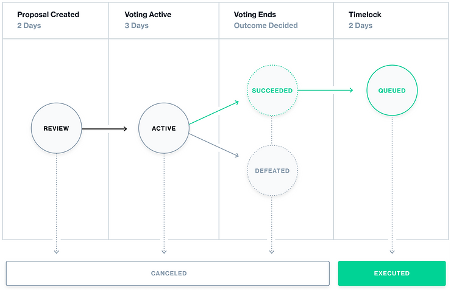
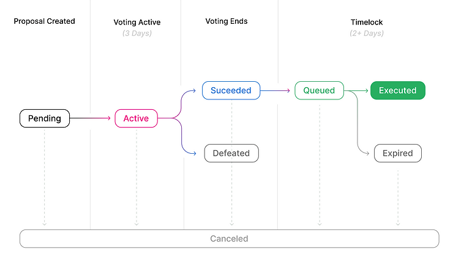

<!doctype html>
<html lang="en">
  <head>
    <meta charset="utf-8">

    <title> DAO </title>

    <meta name="author" content="Dhruvin Parikh">

    <meta name="apple-mobile-web-app-capable" content="yes" />
    <meta name="apple-mobile-web-app-status-bar-style" content="black-translucent" />

    <meta name="viewport" content="width=device-width, initial-scale=1.0, maximum-scale=1.0, user-scalable=no, minimal-ui">

    <link rel="stylesheet" href="../../../reveal.js/css/reveal.css">
    <link rel="stylesheet" href="../../../reveal.js/css/theme/moon.css" id="theme">

    <!-- Code syntax highlighting -->
    <link rel="stylesheet" href="../../../reveal.js/lib/css/zenburn.css">

    <!-- Printing and PDF exports -->
    <script>
      var link = document.createElement( 'link' );
      link.rel = 'stylesheet';
      link.type = 'text/css';
      link.href = window.location.search.match( /print-pdf/gi ) ? '../../../reveal.js/css/print/pdf.css' : '../../../reveal.js/css/print/paper.css';
      document.getElementsByTagName( 'head' )[0].appendChild( link );
    </script>

    <!--[if lt IE 9]>
    <script src="../reveal.js/lib/js/html5shiv.js"></script>
    <![endif]-->

    <style>
      .reveal .slides h1, .reveal .slides h2, .reveal .slides h3 {
        text-transform: none;
      }

      .two-column {
        display: flex;
        flex-wrap: wrap;
      }

      .two-column em {
        margin: 20px;
      }

      .credits {
          font-size: small;
      }

      .left {
              left:-8.33%;
              text-align: left;
              float: left;
              width:49%;
              z-index:-10;
            }
      
    .right {
        left:31.25%;
        top: 75px;
        text-align: left;
        float: right;
        z-index:-10;
        width:49%;
    }
    </style>
  </head>

  <body>
    <div class="reveal">
      <div class="slides">

<!------------------------------------------------------->


<section data-markdown><script type="text/template">

### Metana Web3 Solidity Bootcamp

#### DAO 

*Dhruvin Parikh, March 2023*

</script></section>

<section data-markdown><script type="text/template">

## Lesson Topics

* Governance Contract in Solidity
 * Compound governance
 * Uniswap governance

</script></section>


<section data-markdown><script type="text/template">

## GovernorBravo

* A de-facto standard for DeFi
 * Most projects follow the same principles
* Implemented by Compound finance
* No EIP yet related to standard governance interface

</script></section>


<section data-markdown><script type="text/template">

## Governance contracts in general 

* Like a multisig wallet
* Votes weighted by token balances of the voters

</script></section>

<section data-markdown><script type="text/template">

## Anatomy of governance proposal

* Ethereum transaction
 * an address of list of addresses
 * calldata or list of calldata

</script></section>

<section data-markdown><script type="text/template">

## Governance proposal procedure

* Community - holder of tokens
    * Propose Ethereum transactions
* Based on outcome of the vote
    * Transaction gets executed on chain OR
    * It will get defeated if doesn't pass election
* For actions that are not done on chain (such as changing the legal license of a piece of software), a message granting the rights is simply signed.

</script></section>

<section data-markdown><script type="text/template">

## Governance contract glossary

* Proposal
* Vote
* Quorum
* Voting period
* Queued and Execution
* Timelock

</script></section>

<section data-markdown><script type="text/template">

## Phases of governance

* No standard, but Roughly

```
Pending ⭢ Active ⭢ Defeated ⭢ Canceled
                             ⮑ Succeeded ⭢ Queued ⭢ Executed
                               ⮑ -------  ⮑ ----- ⮑ Expired 
```

</script></section>

<section data-markdown><script type="text/template">

## Compound's governance state transition flow



</script></section>

<section data-markdown><script type="text/template">

## Uniswap's governance state transition flow



</script></section>

<section data-markdown><script type="text/template">

## Governor Bravo

* Voters can explicitly “abstain” rather than voting only yes or no
* The governance contract becomes an upgradeable proxy pattern
* Voters can add a reason string to their votes

<br/>In the OpenZeppelin Bravo implementation, the added field for “abstain” can be seen in the vote [struct](https://github.com/OpenZeppelin/openzeppelin-contracts/blob/master/contracts/governance/compatibility/GovernorCompatibilityBravo.sol).

</script></section>

<section data-markdown><script type="text/template">

## Proposal 9 of uniswap (Add 1 Basis Point Fee Tier)

* In uniswap, liquidity providers earns a fee whenever someone who wants to trade tokens executes a swap against the pools liquidity providers create.
* The fee is determined at creation time, but only be from a fixed set of fee sizes
* Community wished to add a very small fee option to be competitive against other token swapping defi services and proposal passed
https://www.tally.xyz/gov/uniswap/proposal/9
</script></section>


<section data-markdown><script type="text/template">

## Proposal 9 of uniswap (Add 1 Basis Point Fee Tier)

* [proposal was actually executed](https://etherscan.io/tx/0x5c84f89a67237db7500538b81af61ebd827c081302dd73a1c20c8f6efaaf4f3c#eventlog)
* [FeeAmountEnabled got emitted](https://etherscan.io/address/0x1f98431c8ad98523631ae4a59f267346ea31f984#code)
</script></section>


<section data-markdown><script type="text/template">

## Governance Attacks

* Flash loan attack
* Low price attack
* Social or political attacks

</script></section>

<section data-markdown><script type="text/template">

## Improvement

* [Vitalik's attack](https://twitter.com/VitalikButerin/status/1597570120456769536)
* [Vitalik's blog](https://vitalik.ca/general/2021/08/16/voting3.html)

</script></section>


<section data-markdown><script type="text/template">

## Tools

* https://wizard.openzeppelin.com/#governor 
* https://www.tally.xyz/developers 
* https://docs.alchemy.com/docs/how-to-create-a-dao-governance-token 

</script></section>

<section data-markdown><script type="text/template">

## Readings

* [Strategies for Secure Governance with Smart Contracts](https://youtu.be/GbDAmMdmh8Q)
* [Governance on Uniswap](https://docs.uniswap.org/concepts/governance/overview)
* [ERC-5805: Voting with delegation](https://eips.ethereum.org/EIPS/eip-5805)
* [ERC20 Votes: ERC5805 and ERC6372](https://www.rareskills.io/post/erc20-votes-erc5805-and-erc6372)
* [Fund raising module for DAOs](https://github.com/LinumLabs/BC-DAO)
* [Multi-chain Governance](https://docs.compound.finance/governance/)
</script></section>


<section data-markdown><script type="text/template">

## References

* [DAO page on ethereum.org](https://ethereum.org/en/dao/)
* [Governance Contract in Solidity](https://www.rareskills.io/post/governance-contract-solidity)
* [Governor Bravo](https://docs.compound.finance/v2/governance/)
</script></section>

<section data-markdown><script type="text/template">

## End

</script></section>


<!------------------------------------------------------->


      </div>

    </div>

    <script src="../../../reveal.js/lib/js/head.min.js"></script>
    <script src="../../../reveal.js/js/reveal.js"></script>

    <script>

      // Full list of configuration options available at:
      // https://github.com/hakimel/reveal.js#configuration
      Reveal.initialize({
        controls: true,
        progress: true,
        history: true,
        center: true,

        transition: 'none', // none/fade/slide/convex/concave/zoom

	math: {
          mathjax: '../../../lib/MathJax/MathJax.js',
          config: 'TeX-AMS_SVG-full',
	},

        // Optional reveal.js plugins
        dependencies: [
          { src: '../../../reveal.js/plugin/markdown/marked.js', condition: function() { return !!document.querySelector( '[data-markdown]' ); } },
          { src: '../../../reveal.js/plugin/markdown/markdown.js', condition: function() { return !!document.querySelector( '[data-markdown]' ); } },
          { src: '../../../reveal.js/plugin/highlight/highlight.js', async: true, callback: function() { hljs.initHighlightingOnLoad(); } },
          // { src: '../../../reveal.js/plugin/math/math.js', async: true },
           // Zoom in and out with Alt+click
           { src: "../../../reveal.js/plugin/zoom-js/zoom.js", async: true },
        ]
      });

    </script>

  </body>
</html>
